(1)数据库连接，使用时就创建，不使用立即释放，对数据库进行频繁连接开启和关闭，造成数据库资源浪费，影响数据库性能。
设想：使用数据库连接池管理数据库连接。
(2)将sql语句硬编码到java代码中，如果sql语句修改，需要重新编译java代码，不利于系统维护。
设想：将sql语句配置在xml配置文件中，即使sql变化，不需要对java代码进行重新编译。
(3)向preparedStatement中设置参数，对占位符号位置和设置参数值，硬编码在java代码中，不利于系统维护。
设想：将sql语句及占位符号和参数全部配置在xml中。
(4)从resutSet中遍历结果集数据时，存在硬编码，将获取表的字段进行硬编码，不利于系统维护。
设想：将查询的结果集，自动映射成java对象。
☆mybatis是一个持久层的框架，是apache下的顶级项目。
☆mybatis托管到goolecode下，再后来托管到github下(https://github.com/mybatis/mybatis-3/releases)。
☆mybatis让程序将主要精力放在sql上，通过mybatis提供的映射方式，自由灵活生成（半自动化，大部分需要程序员编写sql）满足需要sql语句。
☆mybatis可以将向 preparedStatement中的输入参数自动进行输入映射，将查询结果集灵活映射成java对象。（输出映射）
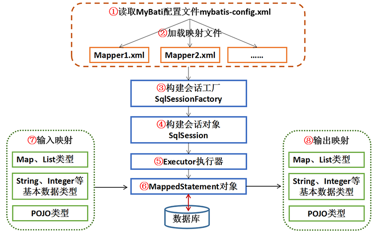
(1)读取MyBatis的配置mybatis-config.xml（运行环境，即数据库连接信息）。
(2)加载映射文件Mapper.xml。Mapper.xml(SQL映射文件)需要在mybatis-config.xml加载才能执行。
(3)构建会话工厂SqlSessionFactory。
(4)创建SqlSession对象。由会话工厂SqlSessionFactory创建SqlSession对象，该对象包含了执行SQL的所有方法。
(5)MyBatis底层定义了一个Executor接口来操作数据库，它会根据SqlSession传递的参数动态生成需要执行的SQL语句，同时负责查询缓存的维护。
(6)在Executor接口的执行方法中，包含一个MappedStatement类型的参数，该参数是对映射信息的封装（如SQL语句的id、参数等）。
(7)输入参数映射。（Map、List类型、基本类型和POJO类型）
(8)输出结果映射。（Map、List类型、基本类型和POJO类型）
这里只是展示MyBatis的结构，不需要下载， 下载的任务交给Maven完成。
下载网址：https://github.com/mybatis/mybatis-3/releases
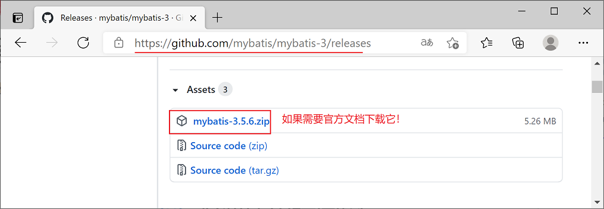 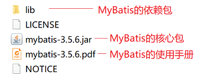
☆SqlSessionFactory的主要作用是创建SqlSession。
☆SqlSessionFactory是线程安全的，一旦被创建，在整个应用执行期间都会存在，如果多次创建同一个数据库的SqlSessionFactory，那么数据库资源很快会被耗尽。故通常一个数据库只对应一个SqlSessionFactory。
☆SqlSession是应用程序与持久层之间执行交互操作的一个单线程对象。
☆SqlSession对象包含了数据库中所有执行SQL操作的方法，其底层封装了JDBC连接。
☆SqlSession是线程不安全的，其使用范围最好在一次请求或一个方法中。
☆使用完SqlSession对象后，要及时关闭它。
| 方法 | 说明 |
| <T> T selectOne(String statement) | 查询方法。参数statement是在配置文件中定义的<select>元素的id；方法返回查询结果的一条泛型对象。 |
| <T> T selectOne(String statement,Object parameter) | 查询方法。参数statement是在配置文件中定义的<select>元素的id；parameter为查询所需的参数；方法返回查询结果的一条泛型对象。 |
| <E> List<E> selectList(String statement) | 查询方法。参数statement是在配置文件中定义的<select>元素的id；方法返回查询结果的泛型对象集合。 |
| <E> List<E> selectList(String statement,Object parameter) | 查询方法。参数statement是在配置文件中定义的<select>元素的id；parameter为查询所需的参数；方法返回查询结果的泛型对象集合。 |
| int insert(String statement,Object parameter) | 插入方法。参数statement是在配置文件中定义的<insert>元素的id；parameter为插入所需的参数；方法返回 执行SQL语句所影响的行数。 |
| int update(String statement,Object parameter) | 更新方法。参数statement是在配置文件中定义的<update>元素的id；parameter为更新所需的参数；方法返回 执行SQL语句所影响的行数。 |
| int delete(String statement,Object parameter) | 删除方法。参数statement是在配置文件中定义的<delete>元素的id；parameter为删除所需的参数；方法返回 执行SQL语句所影响的行数。 |
| void commit() | 提交事务方法 |
| void rollback() | 回滚事务方法 |
| void close() | 关闭SqlSession对象 |
| <T> T getMapper(Class<T> type) | 返回Mapper接口的代理对象，可以用该对象操作数据库。参数type是Mapper的接口类型 |
| Connection getConnection() | 获取JDBC数据库连接对象的方法 |
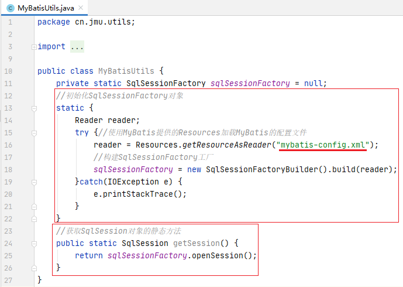
☆MyBatis的强大之处在于映射文件的编写。
☆主要元素:
根元素：<mapper>
子元素：<select>、<insert>、<update>、<delete>、<sql>、<cache>、<cache-ref>、<resultMap>
☆<select>元素的常用属性
| 属性 | 说明 |
| id | 表示命名空间的唯一标识符，常与命名空间组合起来使用。组合后如果不唯一，MyBatis会跑出异常 |
| parameterType | 传入SQL语句的参数类的全限定名或别名 |
| resultType | 从SQL语句中返回的类型的类的全限定名或别名。如果是集合类型，那么返回的应该是集合包含元素的类型，而不是集合本身。 |
| resultMap | 表示外部resultMap的命名引用 |
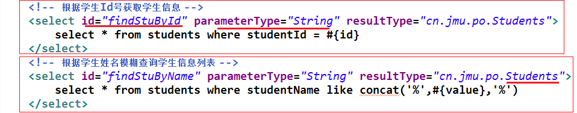
☆<insert>元素的常用属性——id、 parameterType、resultType、resultMap、 keyProperty、keyColumn、useGeneratedKeys
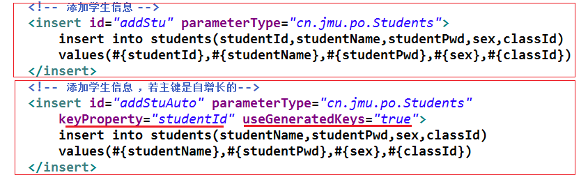
☆<update><delete>元素的常用属性——id、 parameterType、resultType、resultMap
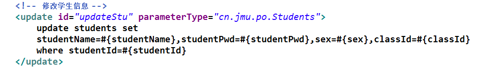
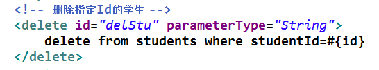
实例需求1：对学生表实现按id查询、按studentName模糊查询、添加student、更新student、删除student。
(1)在MySQL数据库中，创建一个名为mybatis的数据库，在数据库中创建students表，同时预先插入几条数据。
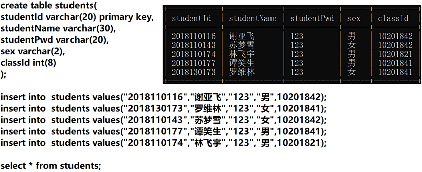
(2)在IntelliJ IDEA中，创建一个名为mybatis01的maven项目，不勾选任何模板。
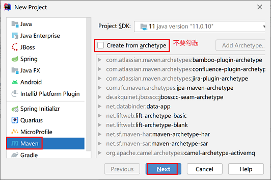 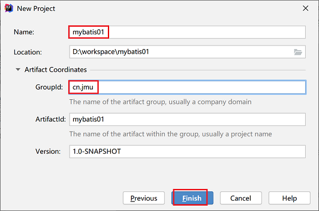
(3)修改pom.xml文件，导入依赖，参考“MyBatis-pom.txt”, 将其内容粘贴到pom.xml文件中。
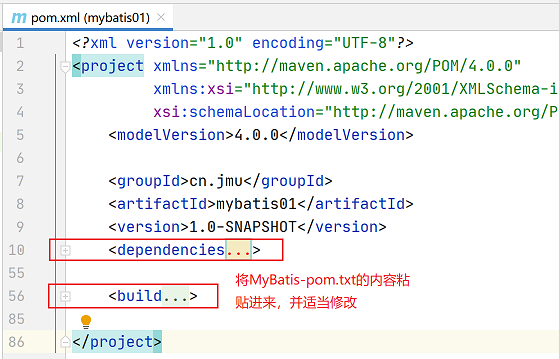
(4)在路径src/main/resources中粘贴数据源配置文件db.properties
在路径src/main/resources中粘贴日志配置文件log4j.properties。来源于“mybatis-3.5.6.pdf”，建议直接copy模板。
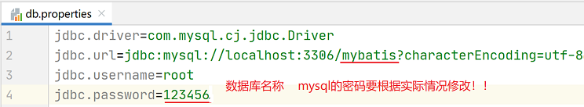
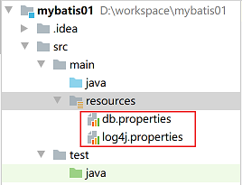
(5)在src/main/resources，创建MyBatis的核心配置文件mybatis-config.xml。配置了数据库的连接。
可以参考“MyBatis配置文件.txt”。
来源于“mybatis-3.5.6.pdf”指导手册的P98，建议直接copy模板。
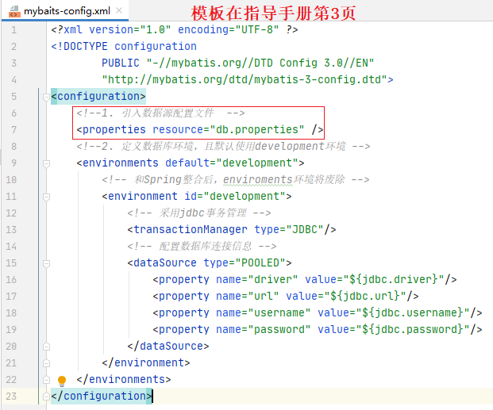
(6)在src/main/java目录下，创建一个cn.jmu.po包，在该包下创建持久化类Students。
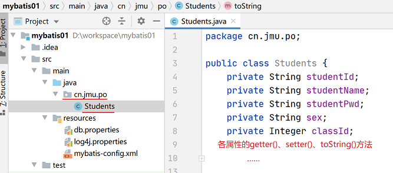
(7)在src/main/java目录下，创建目录cn.jmu.mampper, 在其下创建映射文件StudentsMapper.xml。
★首先将“mapper文件头模板.txt”拷贝进去。来源于“mybatis-3.5.6.pdf”指导手册p4,2.1.5小节。建议直接copy模板。
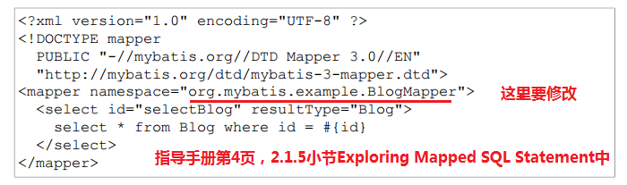
★在其中添加对students表增、删、改、查操作的配置。
★将StudentsMapper.xml关联到核心配置文件mybatis-config.xml中。
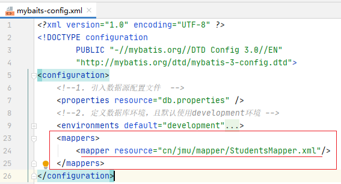
(8)在src/main/java目录下，创建一个cn.jmu.utils包，在该包下创建工具类MyBatisUtils.java。
(9)打开src/main/java/cn/jmu/po目录下的Students.java文件，
选择“Students”，同时按下Alt+Enter组合键，弹出的快捷菜单中选择Create Test
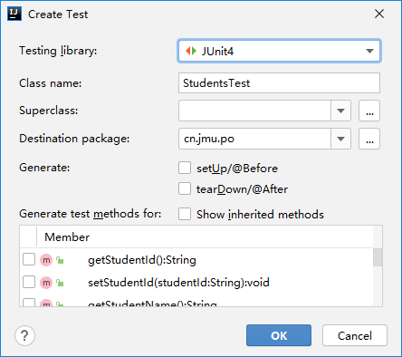
会自动在src/test/java/cn/jmu/po目录下创建测试类文件StudentsTest.java。
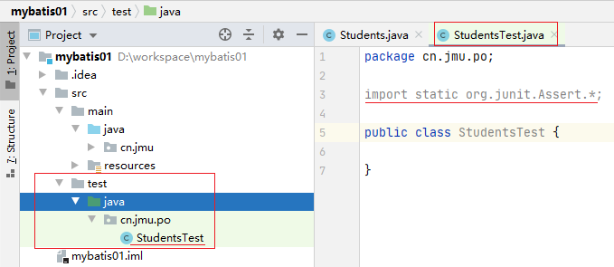
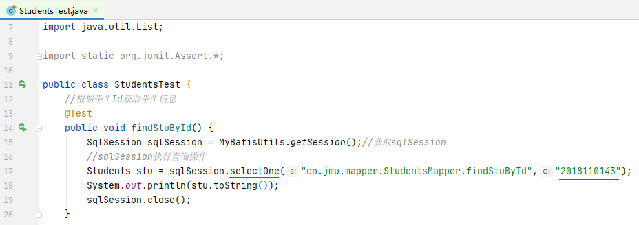
例2：resultMap的应用实例
(1)在MySQL数据库中的mybatis的数据库 下创建t_user表，同时预先插入几条数据。
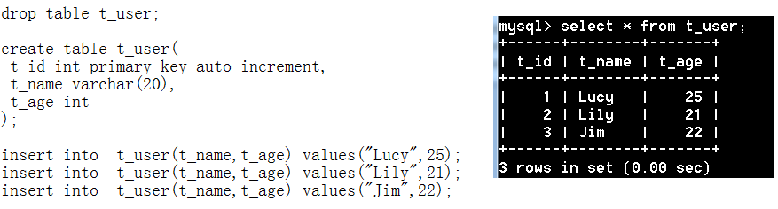
(2)在src/main/java目录下的cn.jmu.po包下创建持久化类User。
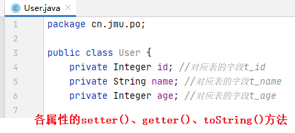
(3)在src/main/java目录下的cn.jmu.mapper包下创建映射文件UserMapper.xml。
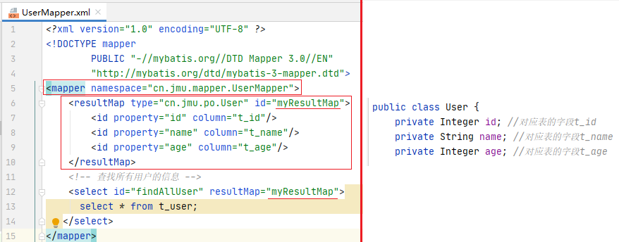
(4)在配置文件mybatis-config.xml中引入UserMapper.xml。
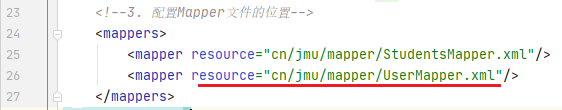
(5)打开src/main/java/cn/jmu/po目录下的Students.java文件，
选择“User”，同时按下Alt+Enter组合键，弹出的快捷菜单中选择Create Test
在src/test/java/cn/jmu/po目录下创建测试类文件UserTest.java，编写测试方法 findAllUser()。
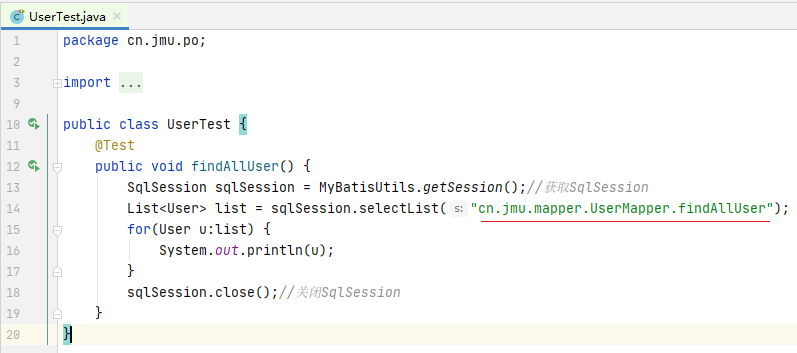
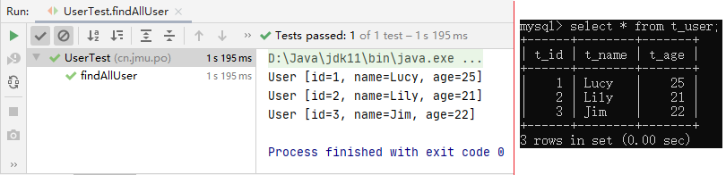